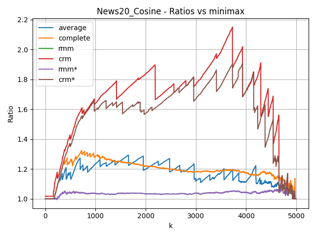
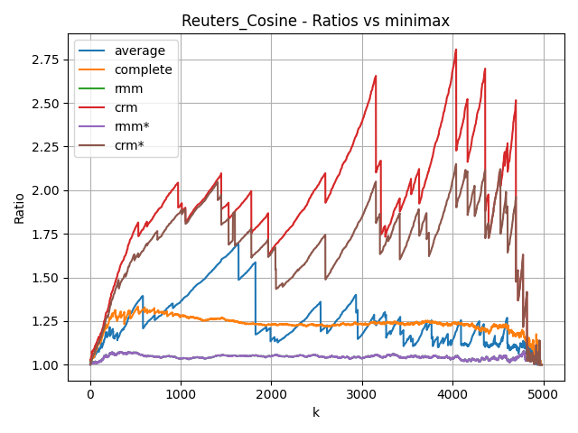

Ratio between the k-center cost of each method and that of minimax on the "News20_Cosine" dataset.

Ratio between the k-center cost of each method and that of minimax on the "Reuters_Cosine" dataset.